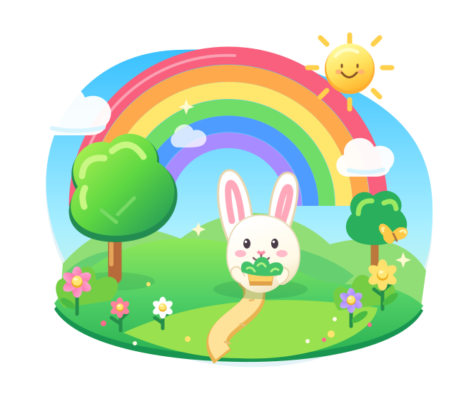
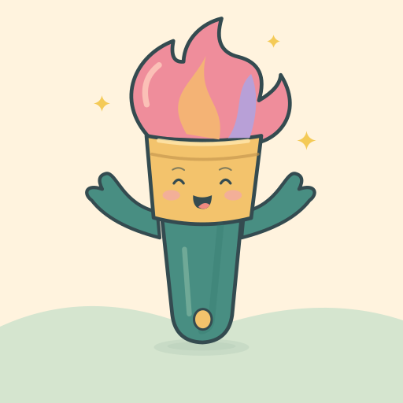
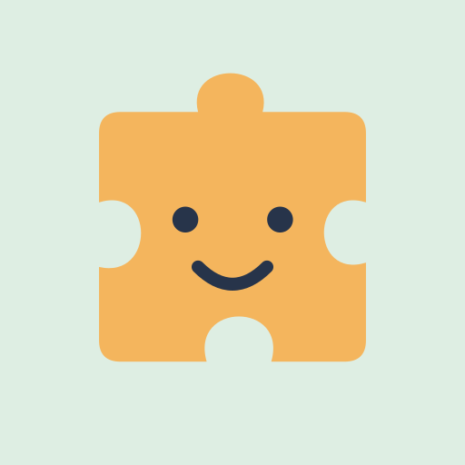

Colorland Adventures
Meet Pico, pick a color, and make it yours. A cheerful coloring adventure with 100 pictures in ten little worlds.
Coloring · Creativity · Discovery
PLAY. CREATE. DISCOVER.
A splash of color. A story to get lost in. A little discovery that becomes a big smile.
Meet four playful experiences made for curious little minds and the grown-ups who love them.
Find your next adventure

Let’s make something!
FOUR WORLDS. ENDLESS WHAT-IFS.
Different adventures.
The same lovely sense of wonder.
Showing all four experiences.
Meet Pico, pick a color, and make it yours. A cheerful coloring adventure with 100 pictures in ten little worlds.
Turn familiar faces into storybook characters. Create a personalized illustrated story to read, keep, and enjoy together.
Little pieces, happy discoveries. Match animals, colors, and shapes through 60 gentle levels, collecting stickers along the way.
From Rainbow Garden to Shape Island, explore five playful worlds filled with colors, creatures, and everyday discoveries.
A growing collection, currently in development. Take a peek at what’s being made.
LITTLE PLAYERS. LOTS OF HEART.
The joy is in trying, imagining, and figuring things out. These worlds invite children to do a little of each.
A new color, a favorite character, a different way to play. There’s room for a child’s own ideas.
Friendly matching games and colorful worlds make exploring feel approachable, one small moment at a time.
Read a story side by side, admire a colorful creation, or celebrate that very first puzzle. Grown-ups are welcome here, too.
FOR CURIOUS GROWN-UPS
The collection is currently in development. This website is a first look at the experiences; official download links will be added when releases are available.
Try PuzzlesKids for simple matching at ages 2–4, Little World of Discovery for exploration at ages 2–6, or Colorland Adventures for coloring at ages 3–7. Animated Stories is a storytelling experience for families to set up and enjoy together.
It’s a personalized storytelling experience. Grown-ups create characters and a story, then enjoy an illustrated mini-book with the family. Books can be saved as PDFs; video export is an optional feature that depends on the final release setup.
Of course. For questions about the projects, write to bondorramona17@gmail.com.
MORE LITTLE WONDERS ON THE WAY
Have a question or a little idea to share? We’d love to hear it.
Say hello